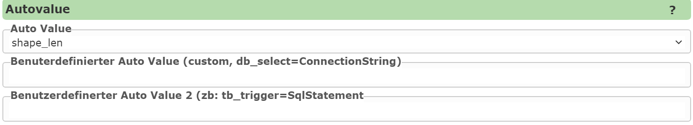
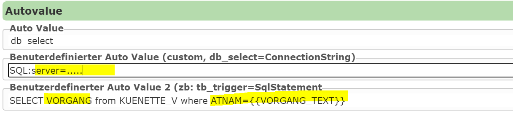

Editierbare Felder: Autovalues¶
Autovalues befüllen ein Attributfeld beim Speichern am Server automatisch, der Anwender muss den Wert nicht eingeben. Sie werden am Bearbeitungsfeld konfiguriert. Diese Felder werden in der Eingabemaske meist als readonly oder nicht sichtbar definiert.
Auswahl im CMS¶
Die meisten Autovalues werden im CMS über das Feld Auto Value aus einer Liste ausgewählt. Für freie Syntax wird custom gewählt und der eigentliche Wert unter Benutzerdefinierter Auto Value eingetragen.
Das gilt insbesondere für:
Expressions und Templates mit führendem
=URL- und Rollenparameter
räumliche Abfragen mit
frommask-insert-default::...die älteren, weiterhin unterstützten Werte
create_userdas Komma-Leerzeichen-Trennzeichenchange_user,create_date_yyyy.mm.ddunddatetime
Bei db_select und db_select_on_insert wird der Autovalue selbst in der Auswahlliste gewählt.
Connection String und SQL-Statement werden in den beiden zusätzlichen benutzerdefinierten
Autovalue-Feldern eingetragen.
Im folgenden Beispiel wird die Länge der erstellten Liniengeometrie in ein Feld übernommen:

Wann wird ein Autovalue ausgewertet?¶
Ein Autovalue kann abhängig von der Bearbeitungsoperation gelten:
Gruppe |
Insert |
Update |
Delete |
Massen-attributierung |
Transfer |
|---|---|---|---|---|---|
|
ja |
nein |
nein |
nein |
nein |
|
ja |
ja |
ja |
ja |
ja |
|
ja |
nein |
nein |
nein |
nein |
|
ja |
nein |
nein |
nein |
nein |
|
nein |
ja |
nein |
nein |
nein |
Geometrie-, Kontext- und allgemeine Autovalues |
ja |
ja |
ja |
ja |
ja |
|
ja |
ja |
ja |
ja |
ja |
Expressions mit |
ja |
ja |
ja |
ja |
ja |
Bemerkung
Die Tabelle beschreibt die Auswertung des Autovalues. Ob ein Feld bei einer bestimmten Operation tatsächlich verarbeitet wird, hängt zusätzlich vom jeweiligen Editing-Ablauf ab.
Werte nur beim Insert¶
Diese Autovalues werden ausschließlich beim Erstellen eines neuen Features gesetzt.
Benutzer und Login¶
Autovalue |
Beschreibung |
Beispiel |
|---|---|---|
|
Datenbankbenutzer aus der Editing-Workspace-Verbindung |
|
|
Login des aktuellen Benutzers ohne WebGIS-Namespace vor |
|
|
Vollständiger Login, wie er am aktuellen Benutzer gespeichert ist |
|
|
Login ohne WebGIS-Namespace und ohne Windows-Domain |
|
|
Domain aus |
|
Beispiel für einen vollständigen Login oidc::DOMAIN\max:
create_login→DOMAIN\maxcreate_login_full→oidc::DOMAIN\maxcreate_login_short→maxcreate_login_domain→oidc::DOMAIN
Bei der Schreibweise name@domain wird nur der Teil nach @ zurückgegeben und kleingeschrieben.
Bei DOMAIN\name wird der Teil vor \ zurückgegeben. Ein eventuell vorhandener WebGIS-Namespace
vor :: wird für *_login_domain nicht entfernt; deshalb ergibt das obige Beispiel
oidc::DOMAIN.
GUIDs¶
Autovalue |
Beschreibung |
Format |
|---|---|---|
|
Zufällige UUID |
32 Hex-Zeichen ohne Trennzeichen |
|
Zufällige UUID |
mit Bindestrichen und geschweiften Klammern |
|
Zeitlich sortierbare UUID Version 7 |
32 Hex-Zeichen ohne Trennzeichen |
|
Zeitlich sortierbare UUID Version 7 |
mit Bindestrichen und geschweiften Klammern |
guid → 9f9c67bea32147e8a46100c17acef040
guid_sql → {9f9c67be-a321-47e8-a461-00c17acef040}
guideignet sich, wenn die GUID in der Datenbank als Text gespeichert werden soll,guid_sql, wenn sie in einer SQL-Datenbank als GUID gespeichert werden soll.Version 7 GUIDs eignen sich für die Speicherung in Datenbanken, wenn die zugrunde liegenden Felder auch indiziert werden sollen. Die erzeugten GUIDs sind zeitlich nach ihrem Wert sortiert, was in der Regel zu einer geringeren Fragmentierung der Indizes führt.
Erstellungsdatum und -zeit¶
Autovalue |
Beschreibung |
Format |
|---|---|---|
|
Lokales Erstellungsdatum |
kulturabhängiges kurzes Datumsformat |
|
Lokales Erstellungsdatum |
|
|
Lokale Erstellungszeit |
kulturabhängiges kurzes Zeitformat |
|
Lokales Datum und lokale Uhrzeit |
kurzes Datumsformat + Leerzeichen + kurzes Zeitformat |
|
Lokales Datum und lokale Uhrzeit |
|
|
UTC-Zeitpunkt |
|
Für systemübergreifende Speicherung ist create_datetime_utc zu bevorzugen, z. B.
2026-10-01T15:23:45.127Z.
Änderungswerte¶
change_* wird nicht nur beim Update ausgewertet, sondern bei jeder Bearbeitungsoperation, bei
der das Feld verarbeitet wird. Damit kann dasselbe Feld bereits beim Insert und danach bei jeder
Änderung aktualisiert werden.
Benutzer und Login¶
Autovalue |
Beschreibung |
|---|---|
|
Datenbankbenutzer aus der Editing-Workspace-Verbindung |
|
Aktueller Login ohne WebGIS-Namespace vor |
|
Vollständiger Login des aktuellen Benutzers |
|
Login ohne WebGIS-Namespace und ohne Windows-Domain |
|
Domain aus |
Änderungsdatum und -zeit¶
Autovalue |
Beschreibung |
Format |
|---|---|---|
|
Lokales Änderungsdatum |
kulturabhängiges kurzes Datumsformat |
|
Lokale Änderungszeit |
kulturabhängiges kurzes Zeitformat |
|
Lokales Datum und lokale Uhrzeit |
kurzes Datumsformat + Leerzeichen + kurzes Zeitformat |
|
Lokales Datum und lokale Uhrzeit |
|
|
UTC-Zeitpunkt |
|
Für Audit-Felder ist change_datetime_utc zu bevorzugen.
URL- und Rollenparameter¶
URL-Parameter¶
url-parameter:<name>
Übernimmt den Wert eines Parameters aus der ursprünglichen URL (siehe Abschnitt: Aufruf des Viewers),
z. B. url-parameter:project_id. Ist der Parameter nicht vorhanden, wird ein leerer String gesetzt.
Die Auswertung kann auf Insert oder Update eingeschränkt werden. Bei einer anderen Operation wird das Feld dann nicht gesetzt:
oninsert:url-parameter:project_id
onupdate:url-parameter:project_id
Rollenparameter¶
role-parameter:<name>
Übernimmt einen Parameter aus den Rolleninformationen des aktuellen Benutzers, z. B.
role-parameter:GEMEINDENUMMER (siehe Rollenparameter). Ist der Rollenparameter
nicht vorhanden, wird ein leerer String gesetzt. Auch Rollenparameter können eingeschränkt werden:
oninsert:role-parameter:GEMEINDENUMMER
onupdate:role-parameter:GEMEINDENUMMER
Geometrie-Autovalues¶
Geometrie-Autovalues verwenden standardmäßig das Koordinatensystem der Feature-Geometrie. Für Koordinaten, Längen und Flächen kann nach einem Doppelpunkt eine positive Ziel-SRefId (EPSG-Code) angegeben werden:
shape_area:31256
shape_centroid_x:4326
Die Berechnung erfolgt auf einer transformierten Kopie. Die ursprüngliche Feature-Geometrie und
deren SrsId werden nicht verändert. Wenn eine Ziel-SRefId angegeben wird, muss die Quellgeometrie
eine gültige SrsId besitzen. Ein ungültiger EPSG-/SRefId-Wert führt zu einem Konfigurationsfehler.
Tipp
Der EPSG-Code sollte immer angegeben werden. Andernfalls hängt das Ergebnis vom Koordinatensystem der Feature-Geometrie ab, in der Regel das der Ziel-Featureklasse, was nicht gesichert ist.
Längen und Flächen¶
Autovalue |
Geometrie |
Ergebnis |
|---|---|---|
|
Polyline |
Länge, auf 2 Nachkommastellen gerundet |
|
Polyline |
Länge, auf ganze Zahl gerundet |
|
Polygon |
Fläche, auf 2 Nachkommastellen gerundet |
|
Polygon |
Fläche, auf ganze Zahl gerundet |
|
Polygon |
Umfang, auf 2 Nachkommastellen gerundet |
Die Einheit ergibt sich aus dem verwendeten Koordinatensystem. Bei einem metrischen Projektionssystem sind Längen typischerweise Meter und Flächen Quadratmeter.
Schwerpunkt und Ausdehnung¶
Autovalue |
Ergebnis |
|---|---|
|
X-Koordinate des Schwerpunkts |
|
Y-Koordinate des Schwerpunkts |
|
minimale X-Koordinate der Bounding Box |
|
minimale Y-Koordinate der Bounding Box |
|
maximale X-Koordinate der Bounding Box |
|
maximale Y-Koordinate der Bounding Box |
Der Schwerpunkt wird abhängig vom Geometrietyp bestimmt:
Punkt: der Punkt selbst
Multipoint: Mittelwert aller Punkte
Polyline: Punkt bei der halben Linienlänge
Polygon: flächengewichteter Schwerpunkt; Löcher werden abgezogen
Envelope: Mittelpunkt
Struktur und Metadaten¶
Autovalue |
Ergebnis |
|---|---|
|
Anzahl der Stützpunkte |
|
Anzahl der Geometrieteile |
|
|
|
SRefId der Feature-Geometrie |
Diese vier Autovalues akzeptieren keine Ziel-SRefId, weil sie nicht von einer Koordinatentransformation abhängen.
Ist keine Geometrie vorhanden oder passt der Geometrietyp nicht zur Berechnung, wird durch diesen Autovalue kein Wert gesetzt.
Allgemeine Werte und Bearbeitungskontext¶
Autovalue |
Beschreibung |
|---|---|
|
Lokales Datum und lokale Uhrzeit im Format |
|
Aktueller Kartenmaßstab, auf eine ganze Zahl gerundet |
|
Aktuelle Bearbeitungsoperation |
|
SRefId der aktuellen Karte |
|
Service-ID des bearbeiteten Themas |
|
Layer-ID des bearbeiteten Themas |
|
ID des Editing-Themas |
edit_operation liefert einen stabilen technischen Wert:
Operation |
Wert |
|---|---|
Insert |
|
Update |
|
Delete |
|
Massenattributierung |
|
Transfer |
|
Benutzerdefinierte Werte mit „custom“¶
Mit dem Autovalue custom können Werte direkt im Feld Benutzerdefinierter Auto Value definiert
werden. Ein Wert mit führendem = wird als Expression bzw. Template ausgewertet. Beispielsweise
kann für ein Feld QUELLE immer der Wert WEBGIS eingetragen werden:
=WEBGIS
Expressions und Templates¶
Beginnt ein Custom-Autovalue mit =, wird er als Expression bzw. Legacy-Template behandelt:
=Objekt [NAME]
=concat([VORNAME], " ", [NACHNAME])
=round(shape_area(31256), 2)
Expressions werden bei allen Bearbeitungsoperationen ausgewertet. Feldwerte werden aus dem aktuell bearbeiteten Feature gelesen. Die vollständige Syntax, alle Funktionen und die Sicherheitsregeln sind im Anhang beschrieben: Expressions (Ausdrücke).
Defaultwert nur in der Insert-Maske¶
mask-insert-default::<wert>
Dieser Eintrag ist kein serverseitig gesetzter Autovalue. Er zeigt beim Anlegen eines neuen
Features lediglich einen Defaultwert in der Eingabemaske an, z. B. mask-insert-default::Entwurf.
Der Benutzer kann den Wert vor dem Speichern ändern.
Automatische Attributierung über räumliche Beziehungen¶
Ein Custom-Autovalue kann Werte aus Features eines anderen Layers übernehmen, die die aktuelle Geometrie räumlich schneiden.
<Feld> from <Layer> [Optionen]
Der Layer kann über seinen Namen oder seine ID angegeben werden. Verfügbare Optionen:
Option |
Beschreibung |
Standard |
|---|---|---|
|
Service, in dem der Layer gesucht wird |
leer |
|
Puffer um die aktuelle Geometrie |
|
|
maximale Anzahl übernommener Werte |
|
|
Trennzeichen zwischen mehreren Werten |
|
Bemerkung
seperator ist aus Kompatibilitätsgründen genau in dieser Schreibweise zu verwenden.
Der besondere Wert space im Separator wird durch ein Leerzeichen ersetzt. Texte mit Leerzeichen
können in Anführungszeichen geschrieben werden. Bei Punkt-Layern wird eine Pufferdistanz von mindestens
0.03 verwendet. Die Einheit des Puffers entspricht dem Koordinatensystem der Feature-Geometrie.
Die gefundenen Feldwerte werden in Abfragereihenfolge verbunden, null-Werte werden übersprungen.
Beispiele:
NR from GDBAbfrage service kataster
→ Das Attribut NR wird von Objekten aus dem Thema GDBAbfrage übernommen, wenn diese sich räumlich mit dem gespeicherten Objekt decken. Gibt es mehrere Treffer, werden diese mit Strichpunkten getrennt.
GNR from Grundstuecke service kataster max 10 seperator ", "
→ Das Attribut GNR wird übernommen, es werden maximal 10 Werte mit Komma und Leerzeichen getrennt eingetragen.
TYP from kasten service strom@mycms bufferdist 20 seperator space-space max 10
→ Das Attribut TYP wird von Objekten aus dem Thema Kasten übernommen, wenn diese im Umkreis von 20 Einheiten liegen. Mehrere Ergebnisse werden mit Leerzeichen-Bindestrich-Leerzeichen getrennt, maximal 10 Ergebnisse.
Automatische Werte aus einer Datenbankabfrage („db_select“)¶
db_select führt bei jeder unterstützten Bearbeitungsoperation eine skalare Datenbankabfrage
aus. Dazu müssen folgende Angaben gemacht werden:
Benutzerdefinierter Auto Value: Connection String
Benutzerdefinierter Auto Value 2: SQL-Statement

Beispiel:
select GNR
from GRUNDSTUECK
where OBJECTID = {{OBJECTID}}
Featurefelder werden mit {{FELDNAME}} referenziert (z. B. {{VORGANG_TEXT}}). Diese Werte werden
als Datenbankparameter übergeben und nicht direkt in das SQL eingesetzt.
Warnung
Um Platzhalter dürfen keine Hochkommas gesetzt werden, auch nicht bei Textfeldern:
-- richtig
where CODE = {{CODE}}
-- falsch
where CODE = '{{CODE}}'
Benutzer- und sitzungsabhängige Filterplatzhalter werden vor der Ausführung ebenfalls aufgelöst. Das Statement muss genau einen skalaren Wert liefern. Der erste Wert des ersten Datensatzes wird als Autovalue verwendet.
db_select_on_insert¶
Funktioniert wie db_select, wird aber ausschließlich beim Insert ausgeführt. Bei anderen
Operationen wird das Feld nicht gesetzt und die Datenbankkonfiguration nicht geprüft.
Verhalten bei Massenattributierung¶
Bei einer Massenattributierung wird die Abfrage nur ausgeführt, wenn mindestens eines der referenzierten Featurefelder enthalten ist. Sind nur einige, aber nicht alle benötigten Felder enthalten, wird ein Fehler mit den fehlenden Attributnamen ausgegeben.
Autovalues über WebService (DataLinq)¶
Ist Benutzerdefinierter Auto Value eine HTTP- oder HTTPS-URL, wird keine direkte Datenbankverbindung geöffnet, sondern ein WebService (z. B. DataLinq) abgefragt:
Benutzerdefinierter Auto Value: DataLinq-/HTTP-URL
Benutzerdefinierter Auto Value 2: Query-String mit
{{FELDNAME}}
Ein Beispiel für eine DataLinq-Abfrage:
https://localhost:44341/datalinq/select/auswahllisten(oJ...token)@color?value=4711
Diese Abfrage liefert folgendes JSON-Ergebnis:
[
{
"value": "4711",
"name": "Blau"
}
]
Für die Einbindung dieses Dienstes müssen die Felder folgendermaßen befüllt werden:
ConnectionString:
https://localhost:44341/datalinq/select/auswahllisten(oJ...token)@color
SqlStatement:
value={{color}}
Hierbei ist color das Edit-Eingabe/Auswahllisten-Feld, das für diesen Autovalue verwendet wird.
In diesem Beispiel würde als Autovalue der Wert „Blau“ übernommen werden. Die Feldwerte werden
URL-kodiert übergeben.
Bemerkung
Es wird immer das erste Ergebnis der Abfrage verwendet. Die Antwort muss ein JSON-Array sein.
Bei einer URL-Abfrage wird der Wert aus dem Feld „name“ übernommen.
Bei DataLinq PlainText-Endpoints heißt das Feld per Definition immer „text“.
Falls eine eigene SQL-Abfrage in DataLinq genutzt wird, sollte das gewünschte Feld umbenannt werden:
SELECT FARBE as name FROM TABLE WHERE ...
Bemerkung
Sicherheitshinweis:
ConnectionStrings oder URLs mit Tokens sollten nicht direkt im CMS hinterlegt werden.
Stattdessen sollten diese Werte im Abschnitt
secretsgespeichert werden.Der ConnectionString kann dann mit einem Platzhalter angegeben werden:
{{select-datalinq-endpoint-auswahllisten}}@color
Fehler- und Leerwertverhalten¶
Ein unbekannter Autovalue setzt das Feld nicht.
Ein leerer Autovalue setzt das Feld nicht.
Ein operationsgebundener Autovalue (
create_*das Komma-Leerzeichen-Trennzeichenoninsert:,onupdate:…) setzt bei einer anderen Operation keinen Wert.Fehlende URL- oder Rollenparameter setzen einen leeren String.
Fehlende oder ungeeignete Geometrien setzen durch den betreffenden Geometrie-Autovalue keinen Wert.
Ungültige SRefIds, fehlende Quell-SRefIds bei einer Transformation, unbekannte Services/Layer und fehlerhafte Datenbankkonfigurationen erzeugen einen nachvollziehbaren Fehler.
Expressions melden Syntax-, Typ- und Rechenfehler und fallen nicht still auf einen anderen Parser zurück.
Empfohlene Konfigurationen¶
Feld → Autovalue |
Zweck |
|---|---|
|
Ersteller |
|
Erstellungszeit |
|
Letzter Bearbeiter |
|
Änderungszeit |
|
Eindeutige, sortierbare ID |
|
Fläche in einem metrischen Koordinatensystem |
|
Bearbeitungskontext protokollieren |
|
Bearbeitungskontext protokollieren |
|
Bearbeitungskontext protokollieren |